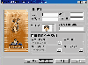
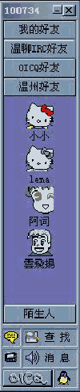

|
|
| 当前位置：电脑报电子版 > 1999 年 > 47 期 > 大众网络 > 中文OICQ使用详解 |
| 《 中文OICQ使用详解 》 |
| 这是一个国产的可以和以往的ICQ媲美的软件，可以发信息到以往的ICQ。它是基于Internet的免费网络寻呼软件，是腾讯OpenICQ的简称。它不仅仅是虚拟的网络寻呼机，更可与传统的无线寻呼网、GSM无线移动电话的短消息系统互联，是国内唯一真正的网络寻呼机。 它支持显示朋友在线信息、即时传送信息、即时交谈、即时发送文件和网址。用户界面参考了大家熟悉的英文ICQ软件，使用起来更加方便。她支持 Win95/98/NT，是十分灵活的网络寻呼工具。它会自动检查是否已联网，如果你的电脑已连入Internet，就可以搜索网友、显示在线网友，可以根据OICQ号、姓名、E－mail地址等关键词来检索，找到后可加入到通讯录中。当你的通讯录中的网友在线时，OICQ中朋友的头像就会显示Online，根据提示就可以发送信息，如果对方登记了寻呼机或开通了GSM手机短消息，即使离线了，你的信息也可“贴身追踪”，朋友们如同虚拟在线。 一、 安装篇 OICQ的安装过程相当简单，完全是“傻瓜”式的操作。双击下载的OICQ文件，解压安装，按照提示点击下一步或者确定即可完成安装。 第一次运行OICQ，用户得注册一个属于自己的传呼机号码。打开OICQ执行文件，出现注册向导。单击“申请新账户”（如果已拥有号码重新安装，可单击“使用已经有账户”，填上已有的OICQ号及密码）。如果你也是Mirabilis ICQ的注册用户，还可以选择“使用兼容传统的ICQ号码”，填上号码。以后寻人就多了一个选择，可以按照这个号码来查询。 确定以后出现注册向导画面(图1)。填上名字（即昵称）、密码、电子邮箱地址，选择一个自己喜欢的图标代表自己。如果你有GSM手机或者寻呼机，OICQ支持手机短讯和寻呼贴身追踪。如果对方登记了寻呼机或开通了GSM手机短消息，即使离线了，你的信息也可“贴身追踪”，朋友们如同虚拟在线。试过之后就知道有多方便啦！选择你自己的寻呼台号、寻呼号、机型种类，OICQ包含了国内大部分的寻呼台。 输入详细个人信息，譬如国籍、省份、E－mail、个人Web等等，对于隐私部分完全可以保密，如姓名、性别、地址等等。而自我介绍嘛，完全可以发挥你个人的水平，写得精彩幽默最好，当然不能太离谱了吧（也可以只以一个笑脸表示，随心所欲）！ 设置你自己的E－mail，填好邮件POP3地址及SMTP地址，你可以选择定时检查时间，OICQ就会自动检查有否新邮件到达。OICQ的另一大特色就是“邮件寻呼功能”，当有新邮件时，会自动传送信息到你的手机或者寻呼上，即使不在线上，也可以知道有无新邮件。 上网方式你可以按实际情况选择，有拨号和专线两种方式，而网络类型有169用户和Internet用户，选择正确的类型可以让你的网络寻呼机跑得更顺畅。你还可以设置代理服务器，填上防火墙地址和端口，测试一下可否用即可。 最后是申请成功的画面。OICQ的号码不是自选的，按实际注册人数定，你的号码越前面说明你使用越早。OICQ最高在线用户现已突破7200人，新注册用户正以每日4000人以上的速度递增。目前注册用户已达60多万，无线寻呼机联网用户突破1100万。  二、使用篇> (一)主按钮开关功能OICQ的主控面板与传统的ICQ有些相似(图2)，却比较简洁。整个面板上只有6个按钮，以下将介绍各个按钮及菜单的功能。 1OICQ公共聊天室：按黄色的小按钮即可进入。聊天室的可视化菜单一目了然，按钮“开房”可以新建自己的聊天室，“房间”是选择进入已建的聊天室。在自建聊天室房主可以进行所有管理权限，譬如更改主题、踢坏人、锁住频道人数、邀请别人进来等等。而且最大的优点就是速度快，这可是Web上的聊天室无法比拟的；功能多，只要用左键点击聊天，菜单栏就会出现加为好友、说悄悄话、踢出房间、改变昵称、粘贴名字、粘贴号码、发送邮件、个人主页、查看信息，常用命令集成菜单，无需记忆命令。当然也可以用命令。OICQ还自带丰富的表情说明，有兴趣的朋友可以到http://www.oicq.com/download/emote.txt下载。 2查找：有三种方式供你查找，1看谁在线上；2OICQ龙虎榜（即使用OICQ累计时间最长的资历排行榜）；3自定义查找。用户可以各取所需，这里介绍自定义查找。点击自定义查找后，可以按姓名、昵称、OICQ号码或者E－mail查询。OICQ还支持前缀字串查询，类似模糊查询，一次查到多人，用户可从“昵称列表”中选定对象，查看信息后还可加入好友栏，按提示即可完成查找。 3无线寻呼：这可是一项非常有用的功能哦！用户在网上就可以利用OICQ给朋友发传呼，无需下线。按下拉框选择对方的寻呼台、机型，填上寻呼号码及你自己的姓名、性别，最后填上你要说的话，点击发送即可完成（前提是你朋友得开着呼机哦！）。点击添加，还可将朋友的信息添加到地址簿，下次再呼时，直接提出就可以了，非常方便。 4消息：显示OICQ历史记录信息，诸如将某人加为好友、新E－mail、通过身份验证等，用户可以自行删除或者清空消息。 5OICQ主菜单：包含1OICQ公共聊天室；2GSM手机短讯；3查找添加用户；4更改当前用户；5注册向导；6个人设定；7系统参数；8关于；9金山卓越资讯及退出等功能。 其中第8项是OICQ简介；第9项是连接到金山卓越公司网站；第2项和无线寻呼一样是很有用的功能，不过是工具不同，一个是寻呼，一个是手机。用法与无线寻呼相差无几，填上手机号码，选择语种（有英文和中文两种，视手机支持哪种语言而定），填上你的姓名、性别及要传送的信息，点击发送即可；第4项可用来更改当前用户。点击“用户号码”后面的下拉钮选择一个要登录的号码，填入用户口令，点击登录即可（别的用户想登录你的账号不知道密码也就进不来啦，记好你的密码）；第6项即修改个人资料，如昵称、头像、E－mail、个人主页、个人说明、传呼号、姓名、地址、邮编、年龄、职业等。安全设置里面有三项：允许任何人把我列为好友（对方无须经你同意即可列为好友栏）、需要身份验证才能把我列为好友（对方须经过你同意才可将你列为好友）、不允许任何人把我列为好友（任何人都无法将你列为好友，千万别选这一项哦）；第7项总共有参数设置、网络设置和E－mail设置三项。 ●参数设置：又包含窗口风格和综合设置两项。只需打上勾即可将窗口设置成总在最前面、Win95任务条风格，好友上站的时候系统会自动通知你，以及自动检测网络状态。如果你觉得每次上OICQ都出现登录提示框很烦的话，将前面的勾去掉就可以关掉这项功能。这里有一个小功能可不容忽视哦！就是“暂离开时自动回复”功能，你可以在空白的地方键入你离开时要说的话，当你要离开的时候就可以免去和所有在线的朋友告别那些麻烦，譬如有事要暂离时就可以输入“有事中，请等待！”单击OICQ旁边的小企鹅按扭，选择“离开”，你所有在线的朋友都会收到这句话，是不是很棒！ ●网络设置：包括上网类型、用户类别及代理服务器设置。 ●E－mail设置：修改邮件账号及密码、POP和SMTP地址及自动检查间隔时间。如果你不喜欢自动检查功能，可以设为0分钟，即关掉这项功能。 6OICQ状态：上线、离开（可结合“系统参数”中的“暂时离开时自动回复”功能使用）、离线。 (二)其他功能及使用 l其他系统参数设置： 右键点击OICQ面板空白处，出现设置菜单。1)可以切换大或小图标显示网友肖像；2)OICQ系统自带两个组别“我的好友”及“陌生人”，用户可以自已添加适合自己的组别并命名；3)添加用户（功能同“查找”）；4)改变字体颜色（可以切换自己喜欢的字体颜色）；5)改变背景颜色（切换自己喜欢的背景颜色）。 右键点击OICQ面板中某组成员图标，除以上的功能以外，还会多出“从该组删除”和“改名”，即删除一个网友或者更改网友的昵称。 若右键点击某组，则会出现“删除该组”和“重命名”的功能。 2.其他特殊功能： 左键单击图标，有收发讯息、传送文件、传送语音、二人世界、手机短讯、发送邮件、个人主页、查看信息等功能。具体如下： 1)收发讯息： ●接收并回复讯息：当有人呼叫时，系统会发出嗒嗒声提示，并且呼叫图标会闪动，且在该组上方显示闪动小图标。双击该图标或者左键单击选择“收发讯息”。在出现的面板空白处填上要说的话，点击发送即可。 ●呼叫并发出信息：若是呼叫新网友可以先按“查找”添加图标，老网友可直接双击或者左键单击图标，选择“收发讯息”，填上要说的话，发送即可。若呼叫对象不在线的话，你的讯息将会自动转为留言，等对方上线时即可看见你的呼叫。 2)传送文件：此项功能必须要接受文件方在你的好友栏里或者是自定义组里，且对方得在线时才能使用。只需用左键点击图标，选择“传送文件”，选定要传送的文件，点击发送，等待对方接受请求即可。 3)传送语音：如果你已经厌倦了打字的烦琐，也许这项功能你会喜欢。插好话筒，左键点击图标，选择“传送语音”,按提示先录好音，也可以打开已录好的文件，点击发送（必须有声卡及话筒，对方的OICQ版本得支持语音传送）。停止发送按“中止”即可，附言栏里可加入附言哦！ 4)二人世界：经常性的呼叫总会让人烦的，而聊天室有时候又太杂，如果你想单独和某人聊天，那就试试二人世界吧!速度极快，泡一杯热茶，和好朋友在此畅谈，感觉不错哦！只要用左键点击图标，选择“二人世界”即可。 5)发送邮件：可以直接给OICQ上的网友发邮件，而无须再输入E－mail地址。 6)个人主页：连接到网友的个人主页网站。 7)查看信息：查看及更新OICQ上网友的个人信息资料。 目前，OICQ版本为OICQ99a Build 1005，下载大小仅为726K，比ICQ要小得多。下载地址：http://www.oicq.com。 (浙江 菱儿 江苏 曾庆祝) |
| 下载本期推荐软件 | 页 首 |
| 《电脑报》版权所有，电脑报网站编辑部设计制作发布 |